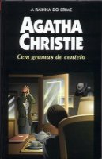

Cem Gramas de Centeio
A Pocket Full of Rye
Na Vila do Tejo tinha acontecido três assassinatos, quando uma velha senhorita — “encantadora, inocente, branca e risonha” — chegou à porta da luxuosa e sinistra mansão. O elegante e eficiente inspetor Neele, encarregado da investigação dos três homicídios, não imaginava que essa doce velhinha, a senhorita Marple, possuía um olfato especial para o crime, um profundo conhecimento das paixões humanas e uma mente extraordinariamente lúcida. Poucos minutos depois da chegada, Marple descobre a relação e a coerência de alguns detalhes, aparentemente absurdos e incongruentes, que o assassino deixou nos corpos das suas vítimas: um punhado de grãos de centeio, num bolsinho da primeira, e um pregador de roupa preso ao nariz da terceira. Baseando-se na letra de uma antiga canção infantil, Marple emprega sua infalível lógica para revelar ao inspetor Neele a identidade de um criminoso aparentemente livre de qualquer suspeita.